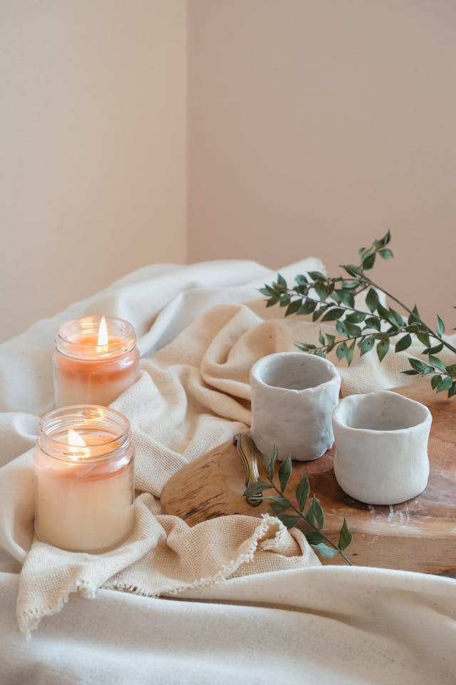
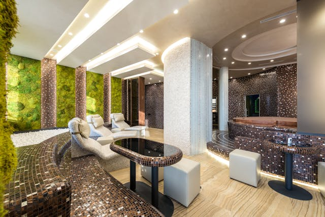

About Moonstone & Meadow Spa
Moonstone & Meadow Spa began with a simple idea: what if rest felt like stepping into a quiet field under a soft night sky?
We believe in slow moments, gentle transitions, and treatments that honor the body’s natural rhythms. Every service is paced with intention, allowing space to breathe, soften, and return to yourself.

Photo by HelloAesthe on Pexels
Our Philosophy
Small, consistent rituals can reshape the way we move through the world. Our approach blends botanical elements, warm textures, and mindful techniques to support deep relaxation and groundedness.
We don’t rush. We don’t overwhelm. We create space for presence.
What We Believe
- Presence over pressure — every moment deserves room to unfold.
- Ritual over rush — slowness is a form of care.
- Nature as nourishment — botanicals, textures, and earth‑rooted calm.
- Touch as communication — gentle, intentional, deeply human.
Our Spaces
Stepping inside feels like exhaling. The air carries soft notes of lavender and cedar. Light filters through linen curtains, warm and diffused. Natural wood, stone, and woven textures invite your shoulders to drop and your breath to deepen.
Every corner is crafted to feel like a sanctuary — from the quiet lounge to the moonlit treatment rooms designed for deep, unhurried rest.

Photo by Artbovich on Pexels
A Note From the Founder
Moonstone & Meadow was born from a desire to create a place where people could return to themselves — gently, without expectation. My hope is that every visit feels like a soft landing, a moment of stillness in a world that moves too quickly.
— Desiree Boudreaux